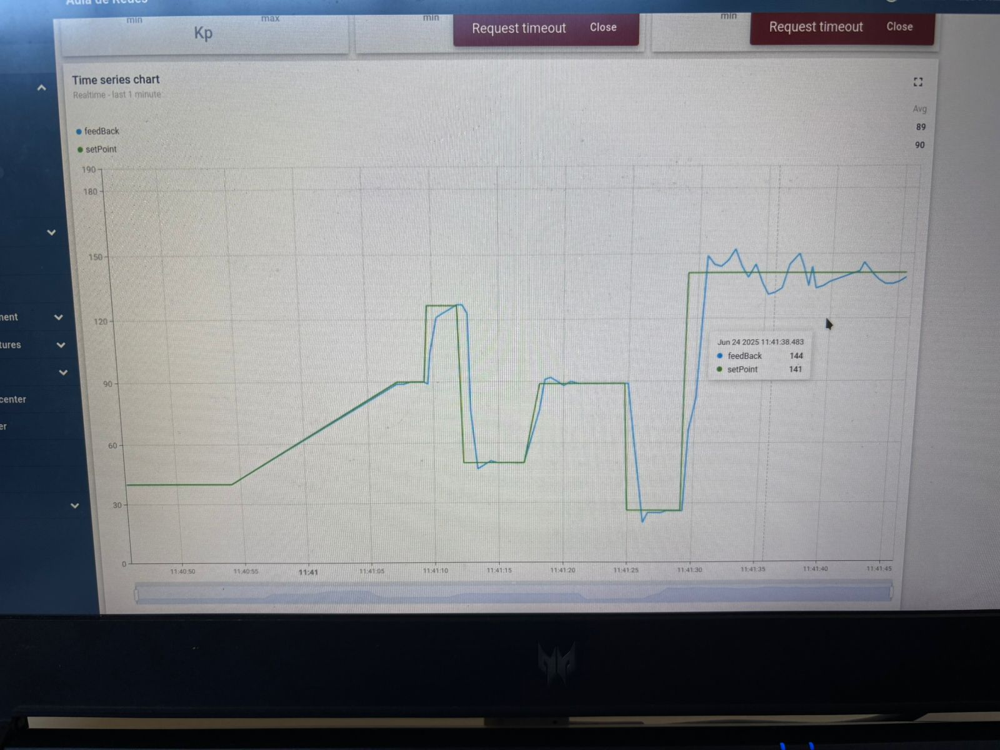

Dashboard completo
Este é o painel principal do sistema, onde é exibido em tempo real a posição do servo motor. Nos knobs
abaixo os valores de PID podem ser ajustados.
A direita, as barras deslizantes são responsáveis por definir o valor máximo e mínimo do servo. Ao
extrapolar esses limites o controlador aciona um led de aviso.

Visualização geral do sistema de monitoramento
Através de experimentos conclui-se que os melhores valores de PID para o sistema são kp = 30, ki = 0 e kd =
0. O sistema não possui muitas partes móveis além do motor o que torna os controles I e D
desnecessários.
Durante os experimentos com diferentes valores de ki e kd foi observado que eles apenas introduziam ruído
que, somado ao ruído do potênciometro, tornava o sistema instável.
Resposta à distúrbios e à mudança de setpoint
Abaixo é possível observar como o sistema responde quando o valor de referência (setpoint) é ajustado
manualmente pelo usuário. Pode ser percebido no gráfico o rápido ajuste do servo motor à nova posição.
Ao final do gráfico flutações podem ser percebidas, no momento da foto o ruído foi atribuido ao
potenciometro já desgastado. Nos experimentos realizados o sistema mostrou comportamente semelhante após
a mudança dos valores de ki e kd.

Comportamento do sistema após reajuste de setpoint
A taxa de envio de dados para a plataforma é de duas amostras por segundo, isso causa um leve problema
de aliasing quando analisando o gráfico. Pode-se perceber também o delay de resposta do sistema e o
overshoot da resposta ao sinal de controle.
Vídeo Demonstrativo
No vídeo a seguir, é possível acompanhar a operação do sistema. Com várias mudanças de setpoint e a
variação do parâmetro kp para 50, causando um overshoot um pouco mais acentuado.
Na região de valor ~140º o potênciometro mostrou uma variação mais acentuada mesmo sem alterações do
sinal de controle. Fica evidenciado ainda mais a importância de sensores calibrados e em bom estado de
conservação.
O vídeo também mostra as transições suaves da interface gráfica e confirma a confiabilidade da
comunicação entre os módulos do projeto.
Considerações Finais
O projeto demonstrou a eficácia do uso de MQTT para comunicação entre o ESP32 e o dashboard, permitindo
um controle preciso do servo motor. A integração com o PID possibilitou ajustes rápidos e eficientes,
garantindo uma resposta adequada às mudanças de setpoint.
A experiência adquirida com este projeto pode ser aplicada em futuras implementações de sistemas
embarcados que necessitem de monitoramento e controle remoto.